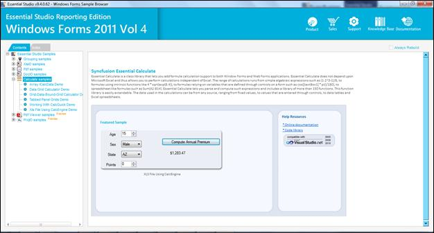
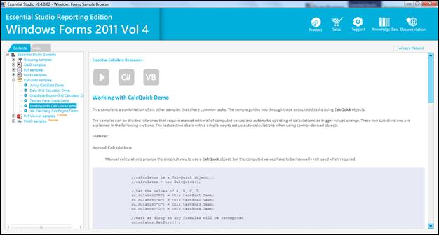

This method provides support for resetting keys (which happens backend) using Calculate Engine.
The user can reset or clear the keys by using this method.
Samples Installation Location:
CalcQuick WF samples are installed under the following location:
C:\Syncfusion\EssentialStudio\<Version Number>\Windows\Calculate.Windows\Samples \2.0\Working With CalcQuick Demo
Viewing Samples:
1. Follow steps 1 to 2 of viewing Windows samples in section 2.2 Samples and Installation.

Figure 32: WF Edition Sample Browser
2. Select Working With CalcQuick Demo from the samples provided and browse through the features.

Figure 33: Working With CalcQuick Demo
 Methods
Methods